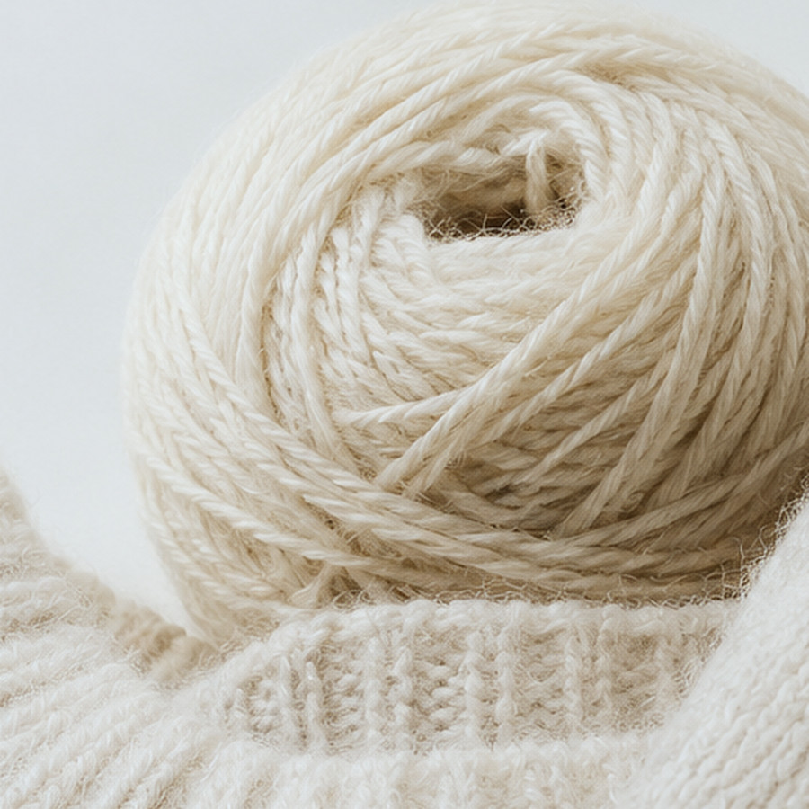
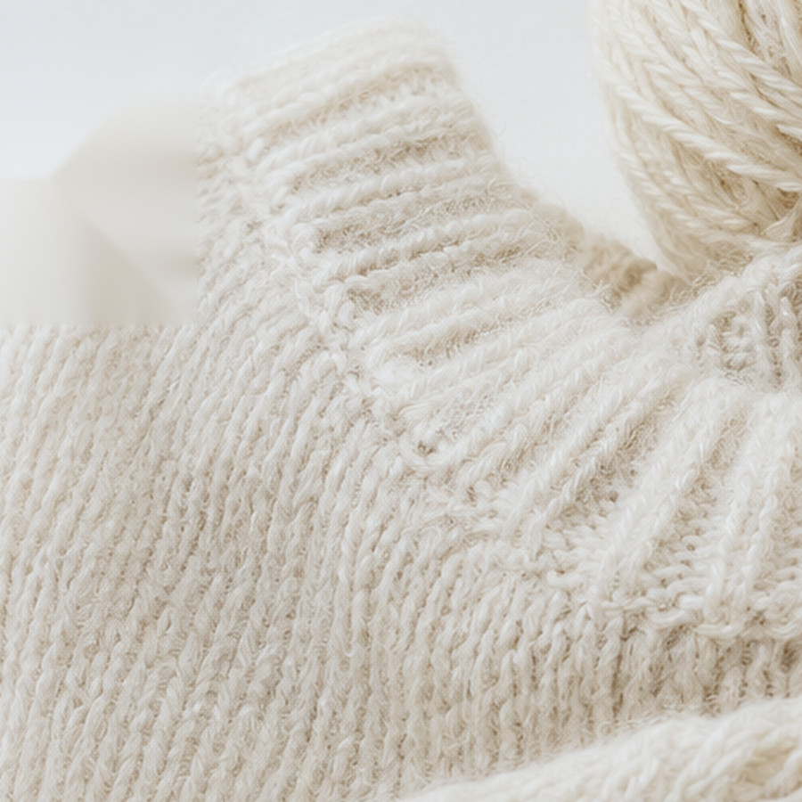
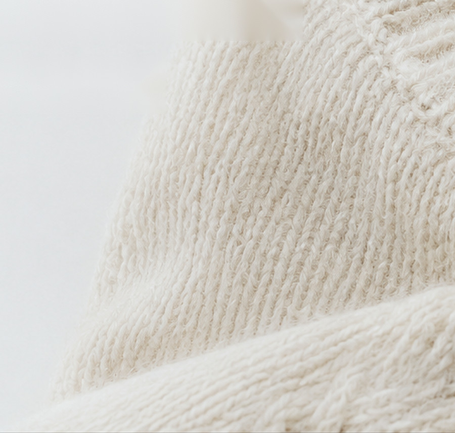
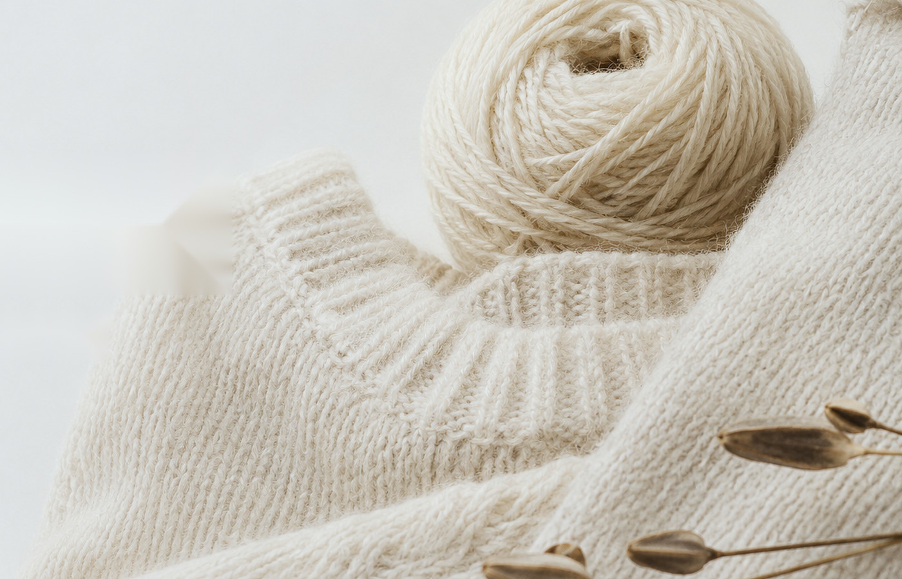
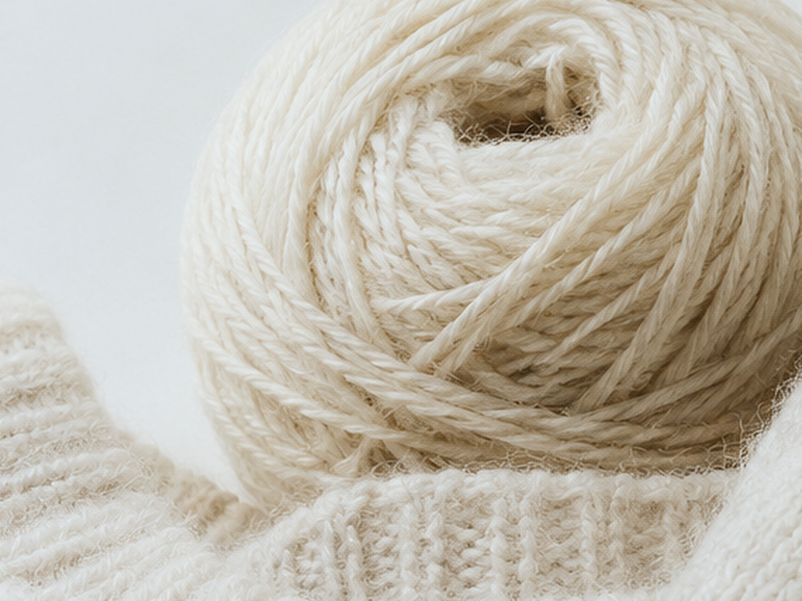
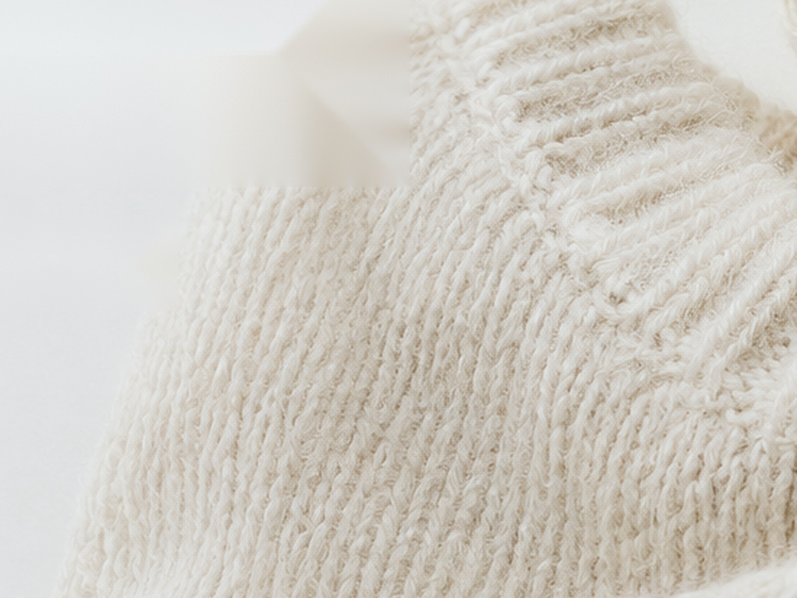
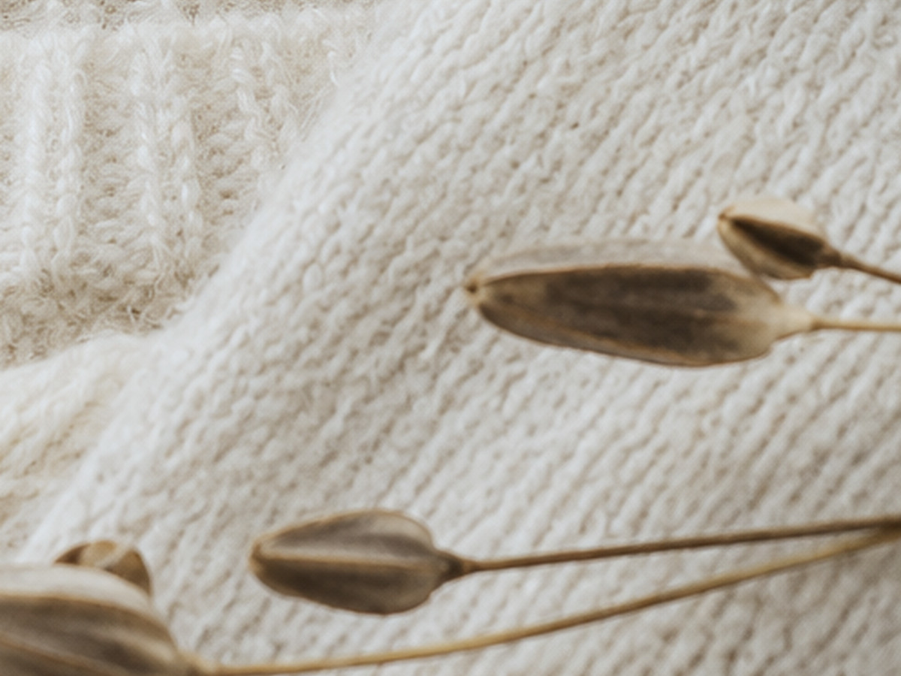

Yarn worth making with.
좋은 소재, 정직한 공정, 지속 가능한 기준으로
우리가 믿고 사용할 수 있는 실을 선별합니다.
Selected Yarns
VIEW ALL YARNS

03 · MATERIAL / ORIGIN
From northern
landscapes.
원산지, 소재, 생산지와 선택 기준을 소개하는 에디토리얼 영역.
DENMARK
NORWAY
SWEDEN
FINLAND

04 · KNIT / LOOKBOOK
Knit with Marie Yarn
06 · JOURNAL
Notes on yarn,
making and material.

ARTICLE
Journal Title
콘텐츠 제목 및 요약이 들어갈 자리.

ARTICLE
Journal Title
콘텐츠 제목 및 요약이 들어갈 자리.

ARTICLE
Journal Title
콘텐츠 제목 및 요약이 들어갈 자리.
07 · ABOUT MARIE YARN
Thoughtfully selected.
Made to stay.
마리얀의 브랜드 소개, 큐레이션 기준, 향후 입점 브랜드와 이야기로 연결되는 영역.
ABOUT MARIE YARN